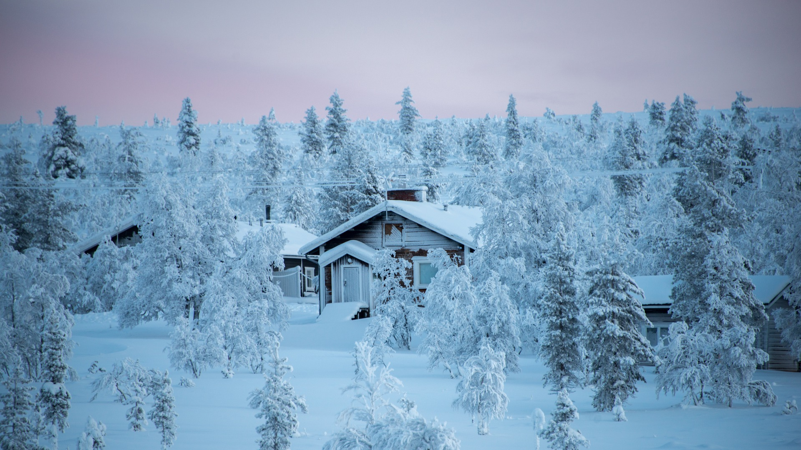

Finland

The thousands of lakes in Finland are surrounded by beautiful forest-covered hills and valleys. There is untouched and exotic nature here like nowhere else, snow-capped mountains and trees, as well as the spectacular aurora borealis or Northern Lights!
Rovaniemi: Known for its beautiful nature
Because of the unspoiled nature of the area and numerous recreational opportunities, tourism is an important industry in Rovaniemi. The city has a number of hotels and restaurants located both in the centre and on the outskirts of the town, hosting over 481,000 visitors in 2013. Rovaniemi is also considered by Finns to be the official home town of Santa Claus. It is home to the Santa Claus Village at the Arctic Circle and SantaPark Arctic World, which is located 8 km (5 mi) north of the centre. Directly across the river from the town is the Ounasvaara ski centre. The top of the Ounasvaara hill bears the site of some of the earliest known human settlements in the area.